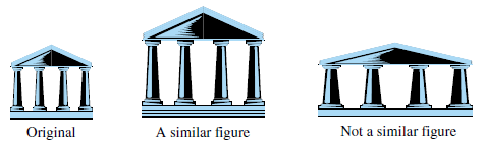
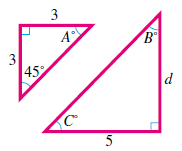
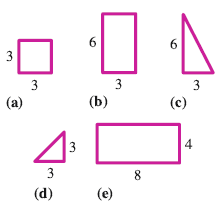
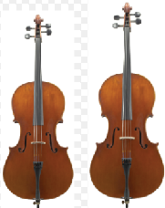

When we enlarge or reduce a photograph, the image in the new photo should have the same shape as the original. An enlargement of a circle should still be a circle, and an enlargement of a square should still be a square. If the enlarged object is twice as tall as the original object, it should also be twice as wide.
The enlarged sailboat is twice as tall and twice as wide as the original.
Two figures are called similar if they have the same shape but different sizes. (They are called congruent if they have the same shape AND the same size.

Triangles are simple shapes, so we'll start our study of similar figures with some triangles. (if you would like to review some properties of triangles, you could refer to Section 1.4.)
Example6.4.1.
Which of the triangles shown below appear to be similar?
Only (a) and (e) appear to have the same shape. They could be similar. What do you notice about the angles in those two triangles?
Activity6.4.1.Similar Triangles.
Let's look more closely at two similar triangles. Use your protractor to measure the angles in each triangle. Record your measurements below.
\begin{gather*}
\angle A = \fillinmath{XXX}\\
\angle B = \fillinmath{XXX}\\
\angle C = \fillinmath{XXX}\\
\hphantom{000}\\
\angle D = \fillinmath{XXX}\\
\angle E = \fillinmath{XXX}\\
\angle F = \fillinmath{XXX}
\end{gather*}
You should find that the corresponding angles are equal, namely that
\begin{equation*}
\angle A = \angle D, ~~~~ \angle B = \angle E, ~~~~ \text{and} ~~~~ \angle C = \angle F
\end{equation*}
Now consider the sides of the two triangles. Measure the sides in centimeters and record your findings. Then compute the quotients of corresponding lengths, as shown below. What do you notice about the quotients?
\begin{gather*}
a = \fillinmath{XXX}\\
b = \fillinmath{XXX}\\
c = \fillinmath{XXX}\\
\hphantom{000}\\
d = \fillinmath{XXX}\\
e = \fillinmath{XXX}\\
f = \fillinmath{XXX}
\end{gather*}
\begin{gather*}
\dfrac{a}{d} = \fillinmath{XXX}, ~ \text{so} ~ a = \fillinmath{XXX} \times d\\
\hphantom{000}\\
\dfrac{b}{e} = \fillinmath{XXX}, ~ \text{so} ~ b = \fillinmath{XXX} \times e\\
\hphantom{000}\\
\dfrac{c}{f} = \fillinmath{XXX}, ~ \text{so} ~ c = \fillinmath{XXX} \times f
\end{gather*}
Did you find that the length each side of the large triangle is 1.5 times the length of the corresponding side of the small triangle? (It is difficult to measure exactly, but your quotients should all be close to 1.5.)
\(\blert{\text{Summary:}}\) In this Activity, we learned two things about similar triangles:
The corresponding angles are equal.
We can multiply each side of the small triangle by the same factor to get the corresponding side of the large triangle. (A factor is something you multiply by.)
Checkpoint6.4.2.
Could these two triangles be similar? Why or why not?
They could be similar because \(\angle C = 50\degree\) and \(\angle F = 70 \degree\text{,}\) so the corresponding angles are equal.
Subsection6.4.2Scale Factors
The factor of 1.5 that you found in the Activity is called a scale factor. If we want to enlarge a figure to a similar shape (or "scale it up"), we need to increase the length of each part of the figure by the same factor. Of course, we need to preserve the angles between sides as well.
The picture at right illustrates one method for enlarging a figure. The principle behind this technique is the same one that enables us to project images from a filmstrip onto a movie screen. You can try it yourself in the next Activity.
Activity6.4.2.Scaling Up.
Here is a picture of a sailboat. We will enlarge it by a scale factor of 2. You will need a ruler. Notice the dot in the upper left above the sailboat.
Draw a very light line from the dot to one of the vertices on the picture of the sailboat, say, the top of the mast. Measure the length of that line, and extend it in the same direction to twice its length. That's the location of the top of the mast in the enlarged figure.
Repeat step 2 with all the other vertices of the original figure. (There are 12 in all.)
Now connect them in the same order as the original to see the enlarged sail boat! (You can check that each dimension of the enlarged sailboat is twice the original.)
\(\vphantom{\dfrac{1}{2}}\)
Subsection6.4.3Ratio and Proportion
Before we continue, let's review some tools you will need.
A Quick Refresher.
Look up any conversion factors you don't remember.
1 foot = inches
1 pound = ounces
1 meter = centimeters
1 quart = pints
1 hour = minutes
1 kilogram = grams
Write each decimal number as a common fraction.
0.75
0.60
0.30
0.125
1.25
2.4
3.5
2.75
The scale factor between two similar figures is also the ratio of their side lengths. In Activity 1, the ratio of the side lengths of the two triangles is 1.5. When the dimensions of two figures have the same ratio, we say that the figures are proportional.
Definition.
Two figures are called proportional if the ratios of corresponding distances are equal.
Note6.4.3.
Recall that we often express ratios as fractions, so, for example, we write 1.5 as \(\frac{3}{2}\text{,}\) or 3 to 2. You can check that the ratios of the corresponding sides of the triangles in Activity 1 are all equal to \(\frac{3}{2}\text{.}\)
\(\blert{\text{Summary:}}\) Here is what we know about using scale factors.
In similar figures, the ratios of all corresponding lengths are equal. We say that similar figures are proportional.
The scale factor is the ratio of the lengths in the new figure to the corresponding lengths in the original figure. We can write this relationship as a mathematical sentence as follows:
\begin{equation*}
\text{scale factor} = \dfrac{\text{new length}}{\text{corresponding original length}}
\end{equation*}
We now have enough information to formulate a test for similarity. Remember that two figures are similar if they have precisely the same shape but perhaps different sizes.
Similar Figures.
Two figures are similar if, and only if
Their corresponding angles are equal, and
Their corresponding sides are proportional.
Both conditions must be true if the figures are similar.
Example6.4.9.
The corresponding sides of all four parallelograms below are actually equal (so the sides are proportional), but the figures are not similar -- they don't have the same shape. You can see that their corresponding angles are not equal.
Checkpoint6.4.10.
These two figures are similar. Find the missing measurements.
Method 2 uses the following fact about similar figures.
Ratios in Similar Figures.
In similar figures, the ratios of lengths in one figure are equal to the ratios of the corresponding lengths in the other figure.
Example6.4.11.
Heather wants to know the height of a street lamp. She discovers one night that when she is 12 feet from the lamp, her shadow is 6 feet long. How tall is the lamp?
In the picture, there are two similar right triangles, which we can separate as shown below. The larger triangle has a base of \(12 + 6 = 18\) feet, and the smaller triangle shows Heather and her shadow.
The ratio of height to base in the small triangle, 5 to 6, must equal the ratio of height to base in the large triangle, \(h\) to 18.
To finish up our study of similar figures, we'll look at the special case of similar triangles. Because they are such simple figures, the condition for similarity of triangles is actually less demanding than the conditions for similar figures in general. If the sides of two triangles are proportional, then their corresponding angles are automatically equal, and vice versa. Thus, we only need to verify one of the conditions to show that two triangles are similar.
Similar Triangles.
Two triangles are similar if either one of the following conditions is true:
Their corresponding angles are equal,
Their corresponding sides are proportional.
Example6.4.13.
Explain how you know that these two triangles are similar.
Recall that the sum of the angles in a triangle is 180°. Both of these triangles are right triangles, so the sum of the other two angles in each triangle is 90°. So the missing angle in the first triangle must be
For Problems 1-6, answer the questions in complete sentences.
1.
What is a factor?
2.
How is the meaning of the word "similar" different in mathematics from its common English meaning?
3.
What does it mean for two figures to be congruent?
4.
What does it mean for two figures to be proportional?
5.
If you know the lengths of two corresponding sides in similar figures, how can you find the scale factor?
6.
What does the 2 mean in the expression \(k^2\text{?}\)
Exercise Group.
For Problems 7-14, decide whether the figures are similar. If they are similar, give the scale factor from the first figure to the second figure. If the figures are not similar, explain why not.
7.
8.
9.
10.
11.
12.
13.
14.
Exercise Group.
For Problems 15-18, each statement is false. Correct it to make a true statement.
15.
Two figures are similar if their sides are proportional.
16.
We can create an equivalent ratio by adding the same number to both top and bottom.
17.
Doubling the dimensions of a rectangle also doubles its area.
18.
To enlarge a picture, we add the same factor to each dimension.
Exercise Group.
In Problems 19-26, the figures are similar. Find the unknown angles and sides.
19.
20.
21.

22.
23.
24.
25.
26.
27.
Which of the following statements are true?
All isosceles triangles are similar.
All equilateral triangles are similar.
All rectangles are similar.
All squares are similar.
28.
Which of the following statements are true?
All right triangles are similar.
All isosceles right triangles are similar.
All circles are similar.
All obtuse triangles are similar.
29.
Tamisha is measuring the angles in two triangles. She finds that two of the angles in the first triangle are equal to two angles in the second triangle. She concludes that the triangles are similar. Is she correct? Explain why or why not.
30.
Hakim says that if the lengths and widths of two rectangles are proportional, then the rectangles are similar. Is he correct? Explain why or why not.
Exercise Group.
In Problems 31-34, are the triangles similar? Explain why or why not.
31.
32.
33.
34.
Exercise Group.
For Problems 35-38, find two figures that are similar.
35.
36.
37.

38.
Exercise Group.
For Problems 39-42,
Find the scale factor.
Calculate the new dimension.
39.
A child's cello is 75% as tall as a full-sized cello. The strings on a full-sized cello are 28 inches long from the nut to the bridge. How long are the strings on a child's cello?

40.
Celia wants her 8 by 10 inch portrait enlarged by 100% in each direction. What will be the new dimensions of the portrait?
41.
Barry increased the font size on his computer by 25%. Capital letters used to be 2 millimeters tall. How tall are they now?
42.
The dimensions of a new model stereo speaker have been reduced by 20%. The old model speakers were 12 inches tall. How tall are the new speakers?
Exercise Group.
For Problems 43-48,
Use ratios to find the dimensions.
Find the scale factor.
43.
In the floor plan for a new house, a six-foot wide picture window is shown as half an inch wide. How long is a 21-foot living room on the plan?
44.
On a map of the county botanical garden, a lake that is 20 meters wide appears 4 centimeters wide. The rose garden is 16 meters long. How long is it on the map?
45.
On a blueprint for the new library, 1 inch \(=\) 10 feet. How long are the 25-foot bookshelves on the blueprint?
46.
Grace enlarged an 8-inch wide photograph to a 2.5-foot wide poster. If the photo was 12 inches tall, how tall is the poster?
47.
On a billboard, a picture of a 6-inch submarine sandwich is 4 feet long. How tall is the picture of a 10-inch tall soda cup?
48.
George Washington was 6 feet 2 inches tall, and his nose was 3.34 inches long. The nose on his likeness at Mount Rushmore is 21 feet long. At the same scale, how tall would a full statue of George Washington be?
Exercise Group.
For Problems 49-50, show your calculations.
49.
While making the movie Titanic, the producers built a 775-foot model of the ill-fated ship. The original vessel was 882 feet, 9 inches long.
What was the scale factor used to build the model?
If the real Titanic was 175 feet tall from the keel to the top of the funnels, how tall is the model?
50.
The Straits of Mackinac between Michigan's Upper and Lower Peninsulas are 5 miles wide. Engineers studying the Mackinac bridge, the world's longest suspension bridge, build a model of the straits that is 50 feet wide.
Express the scale factor as a fraction. (There are 5280 feet in a mile.)
In their model, the suspension portion of the bridge is 7.2 feet long, and the towers are 12.5 inches above the water. What are the corresponding dimensions of the actual bridge?
Exercise Group.
For Problems 51-54,
Separate the figure into two similar triangles. Sketch and label the triangles.